Health Survey
Application with NFC
Design
This is the Design.html file.
Software
Architecture
Below is a diagram of the overall software architecture of the application,
including the Near Field Communication (NFC), user interface, and documentation
components. The boxes are color-coded to indicate each team member's
contribution.
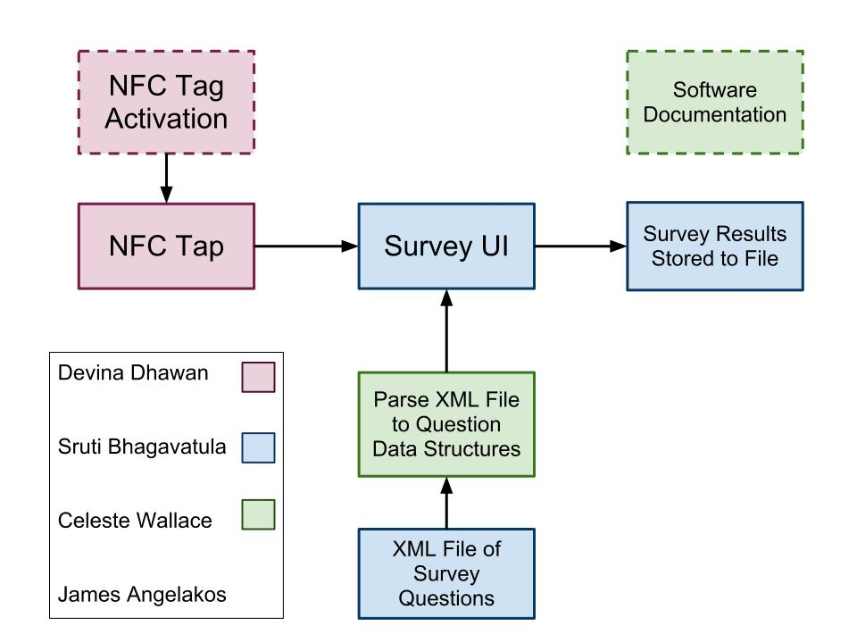
Mind Map
We used the Freeplane mind mapping
software to create a mind map of different potential components of the survey
software. Some features,
such as programmable NFC tags, were
considered core features of the application, and other features, such as
password protection for survey
results, were considered extras that
would only be attempted if time allowed.
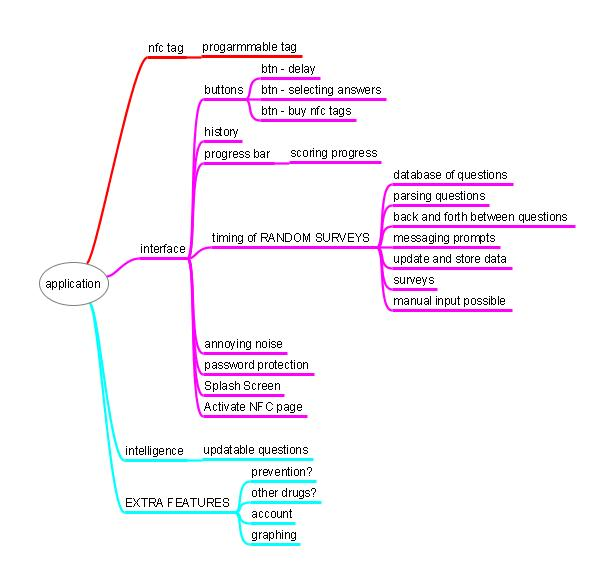
Storyboards
Given the Mind Map we created above, we generated storyboards to plan out
the user interface for the different basic menu options.
Activation Page for NFC Tag Home
Page for the Survey
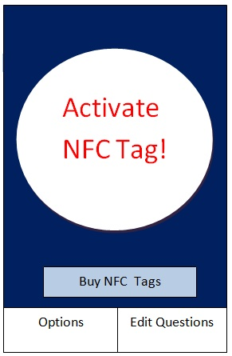 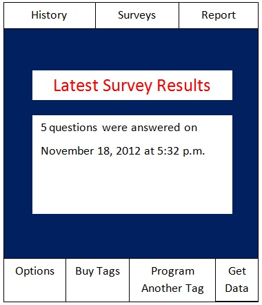
View Survey History by Pressing “History”; at
History Page, Press “BACK” to return to Home Page
 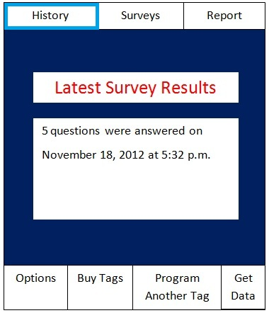 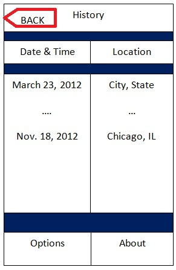
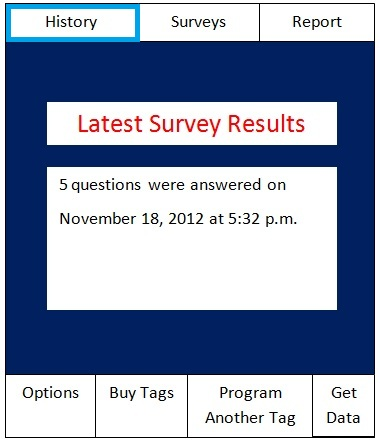 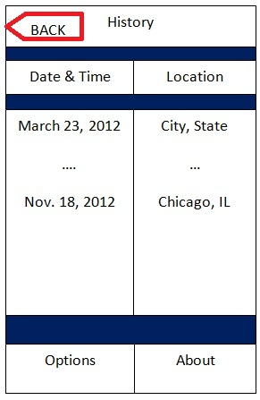
Example Survey Prompts
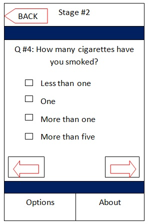 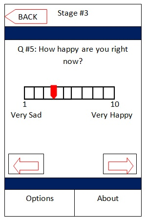
State Machine
Diagram: Survey
Below is a state machine diagram for the
survey application. The rectangular
boxes represent the buttons that the user presses within the application (or on
the phone) to move to the indicated next screen. All of the buttons featured are within the
survey application, except for the “Back” button, which is a button built into
the touchscreen of the Android phone (and is usually indicated by a curved
arrow).
The order of the questions may vary depending
on the answer that the user selects to a particular question. Although it is not pre-determined how many
questions the user will have to answer for a survey, the user can go back
through each of the previous questions by pressing “Undo” within the survey application,
or the user can continue to the next screen by pressing “Next”. When the user has reached the end of the
survey, a “Finished” screen will appear, and then the user can complete the
survey by saving the results to a text file on the phone’s SD card.
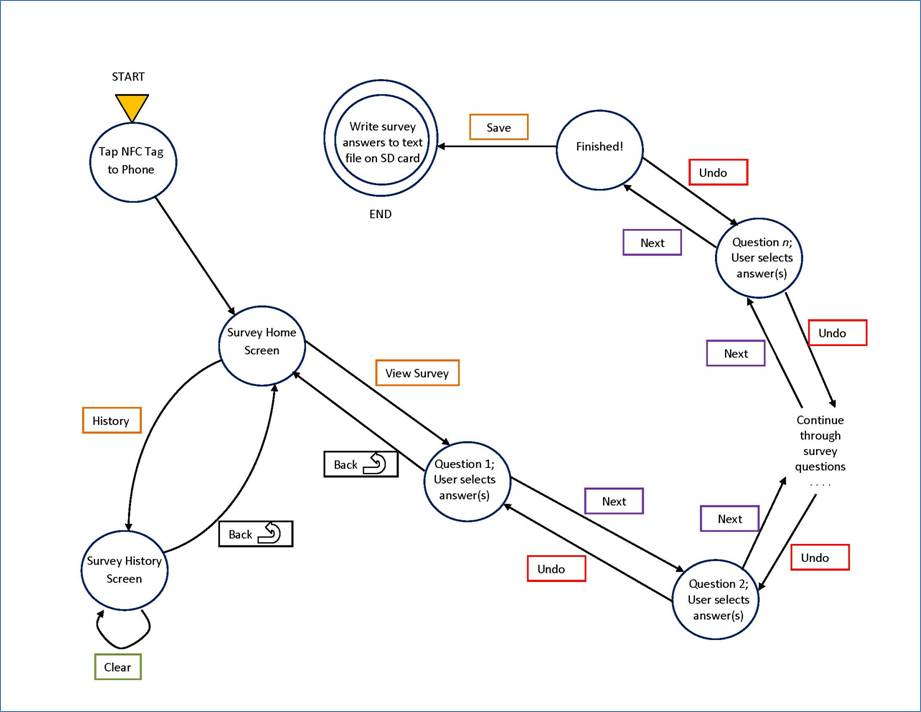
Class Diagrams
Design Patterns
OPPM Project
Timeline
Screenshots of
Final Survey
The following is a screenshot of
the stored NFC tag events.
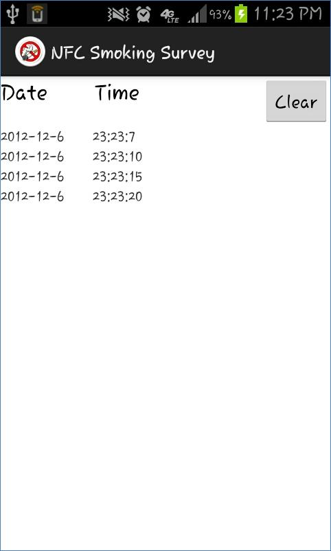
Whenever the NFC tag is activated against the battery of the Android
phone, the survey application is launched with the home screen:

The user answers the survey questions.
Note that the user can return to previous questions by pressing the
“Undo” button at the bottom left of the screen.
There are no previous questions to go back to when the user is answering
the first question, but from any other question, the user may press “Undo” to
continue going back to previous questions, all the way to the first survey
question.
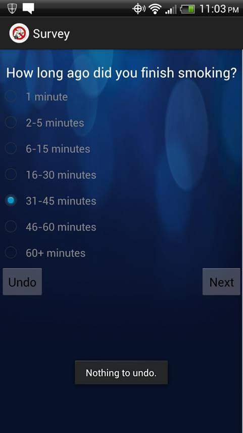
For questions with many answer choices, the user can scroll down to see
all of the answer options and to view the buttons at the bottom of the screen:
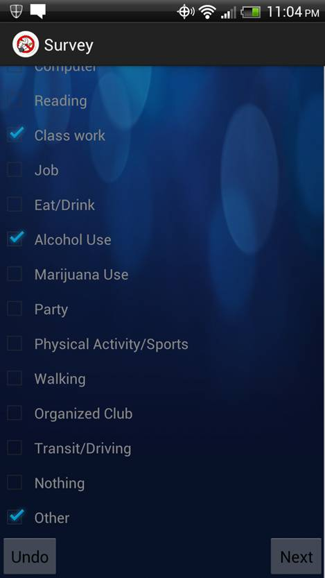
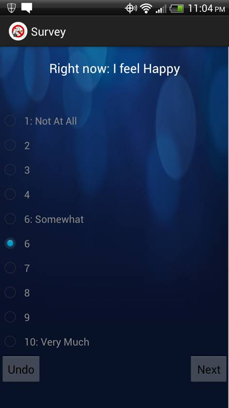
When the user reaches the end of the survey, and she doesn’t need to
change her answers to any of the questions, the user can press “Save” to save
her survey answers to a text file on the phone’s SD card.
The user’s
answers to the survey questions are stored in a text file on the phone’s SD
card:
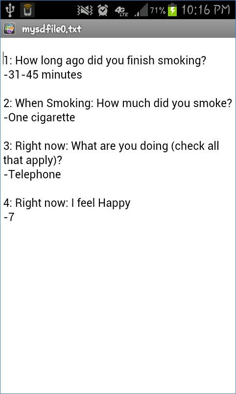
Multiple text files containing survey answers can be
stored on the phone’s SD card. These
files can be copied from the
SD card for later processing and statistical analysis.
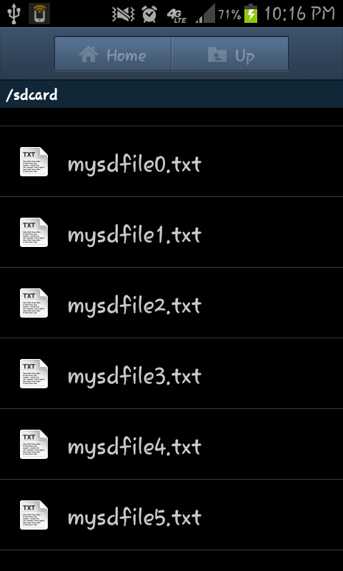